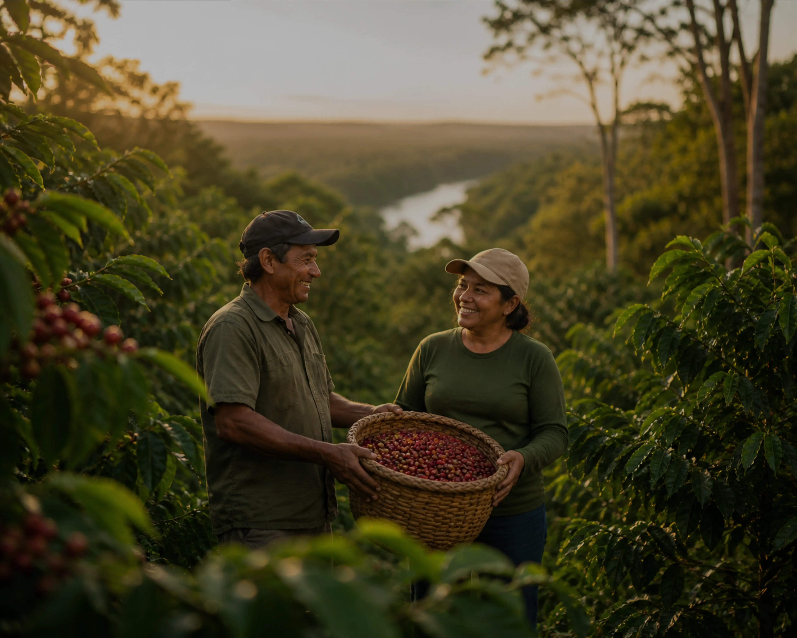
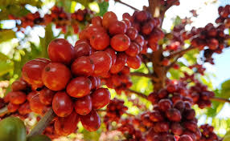

Nossos Pilares
A Excelência do Café Amazônico

Sustentabilidade Amazônica
Produzimos café em harmonia com a floresta, respeitando o ciclo natural da terra e garantindo práticas 100% orgânicas que preservam o meio ambiente e valorizam a biodiversidade.

Inovação e Tecnologia
Utilizamos insumos e técnicas modernas de manejo agrícola que aumentam a produtividade sem comprometer o equilíbrio ecológico. A tecnologia é nossa aliada para transformar cada hectare em eficiência e qualidade.
Certificação e Credibilidade
Buscamos certificações reconhecidas internacionalmente que comprovam nossa responsabilidade ambiental, social e de governança. Isso eleva o valor do produto e fortalece a confiança dos investidores e consumidores.

Desenvolvimento Regional
Integramos a agricultura familiar à nossa cadeia produtiva, promovendo inclusão social, geração de renda e fortalecimento das comunidades locais. O Café Selvagem é também um motor de desenvolvimento sustentável para a Amazônia.

Terroir Único
Nossas produções utilizam a umidade natural da Amazônia e solo rico em nutrientes orgânicos, resultando em um café com baixa acidez e notas de castanhas típicas da região.

Capacidade Industrial
Com produção de milhares de sacas anuais, estamos prontos para atender contratos globais e indústrias de larga escala com logística integrada saindo de Manaus.